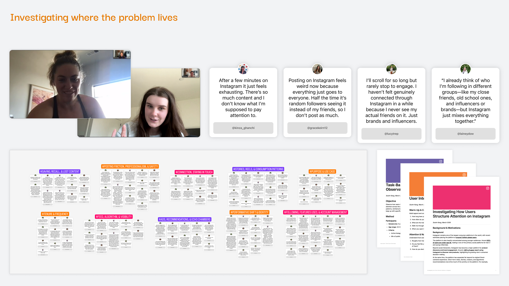
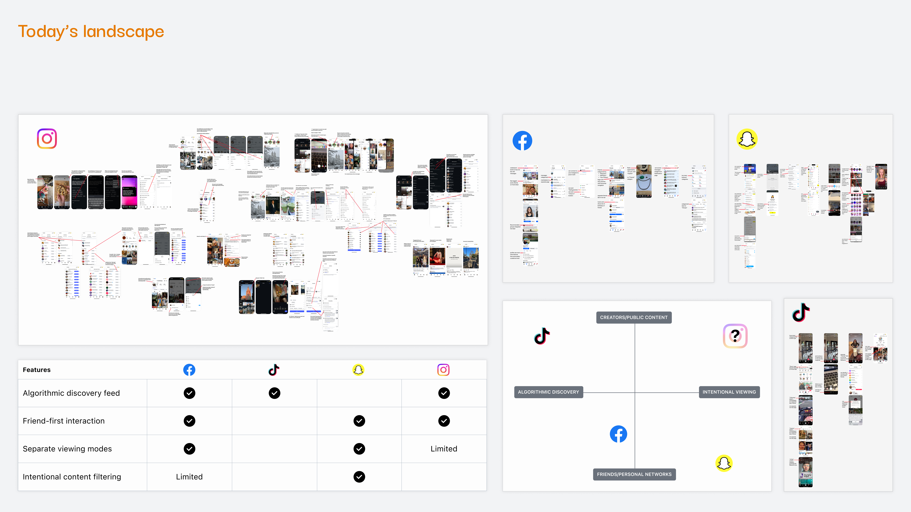
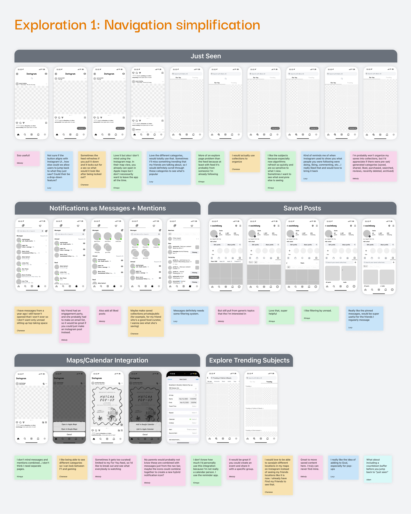
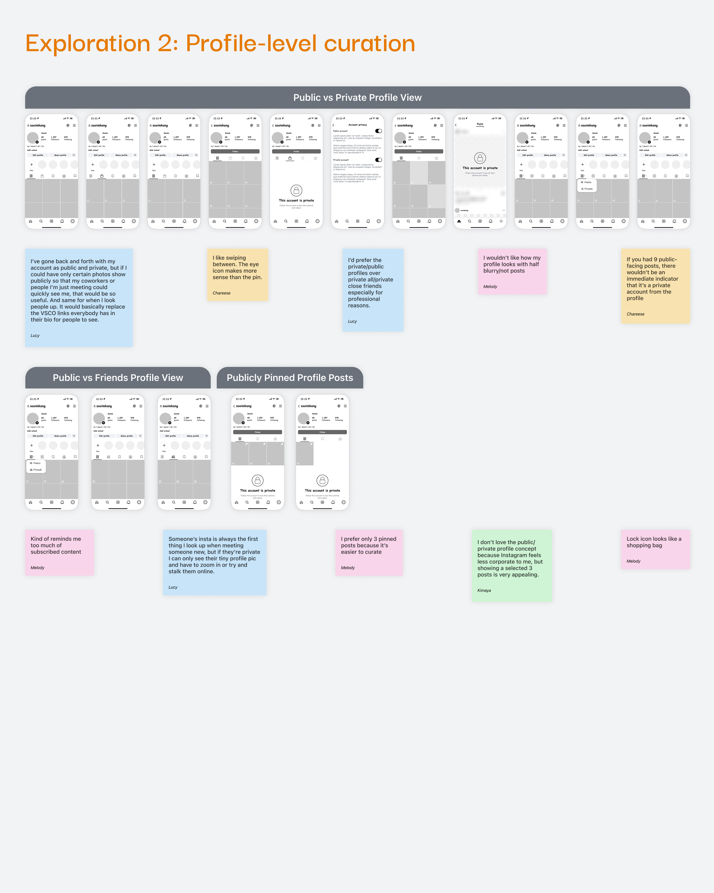
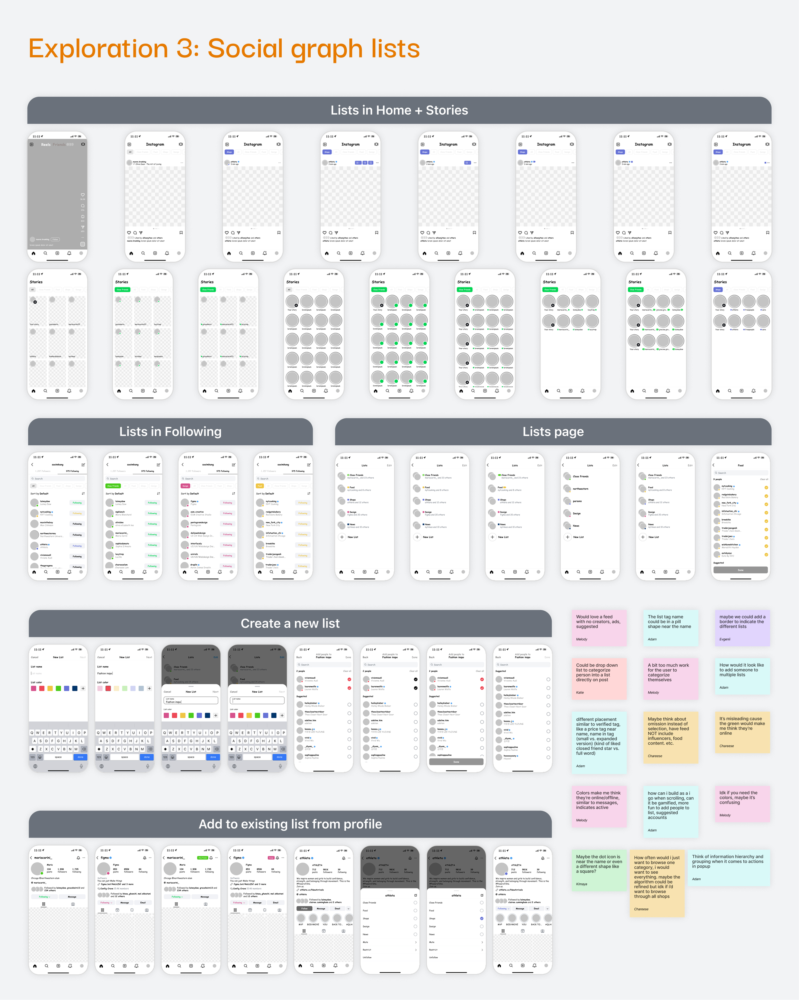
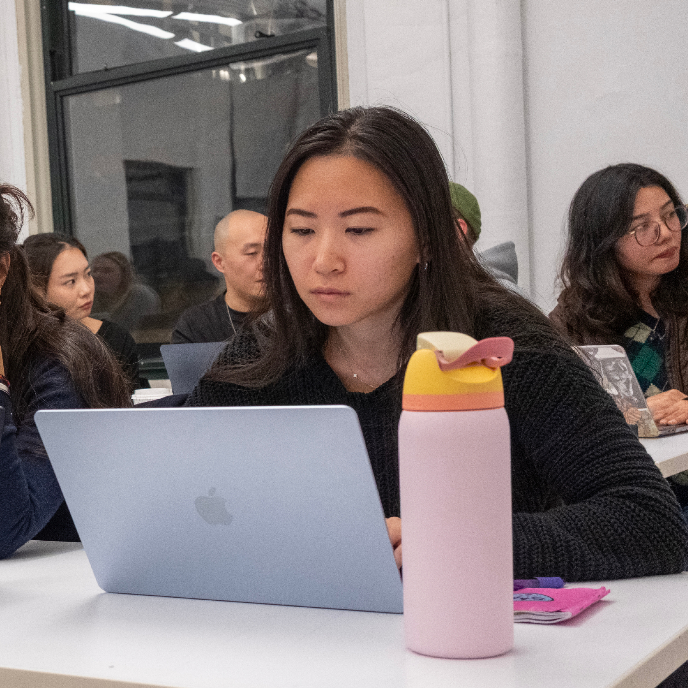
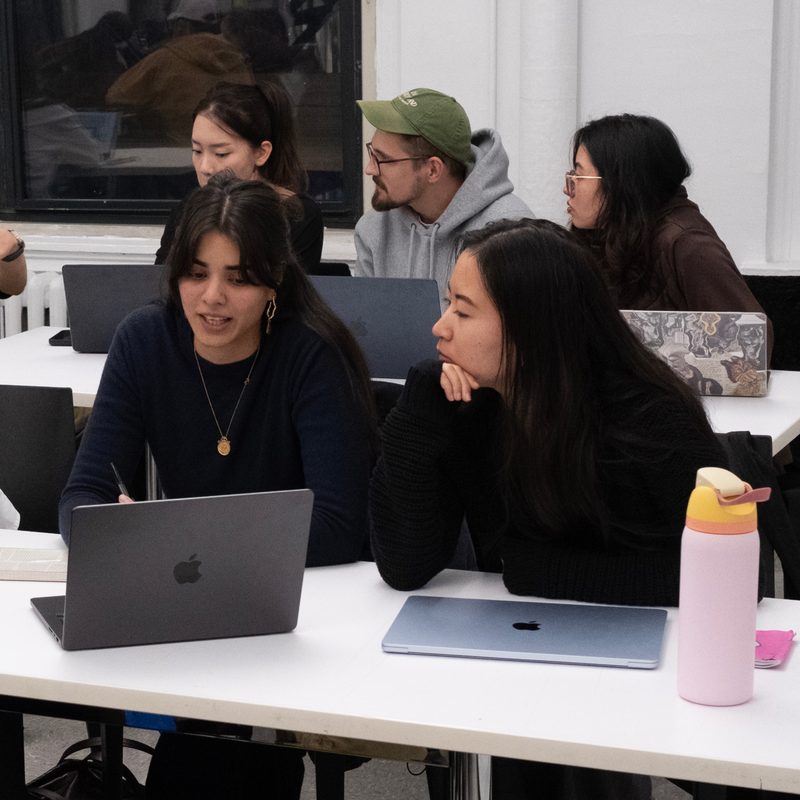
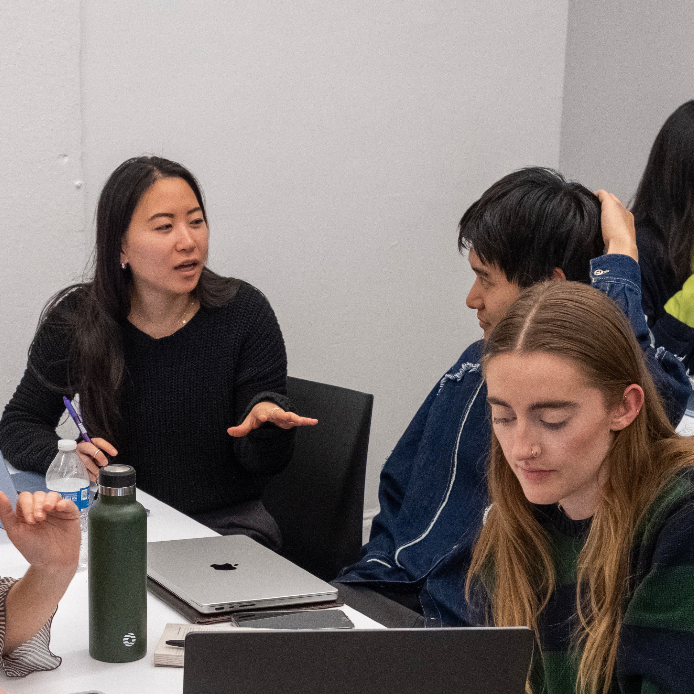

Instagram · Product Design · Concept · 2025
Controlling What You See in the Feed
Overview
A single feed forces different relationship contexts to compete for attention.
Instagram is built for discovery — one algorithm, one ranked feed, all relationships together. That model works for content, but it does not reflect how users actually experience their social graph.
Problem
A single feed collapses friends, creators, brands, and communities into one ranking system. Users can scroll for a long time without seeing the people or updates they actually meant to check in on.
Opportunity
As private sharing grows and broad posting declines, the missing layer is not more algorithmic prediction. It is a way for users to define priority in the moment.
How might we let users choose which relationships matter in the moment without sacrificing discovery?
Solution
Instagram Lists: choose context before discovery.
Users define who they're browsing for. Instagram handles the rest.
Lists reshape ranking across the app.
Home, Stories, and Following adapt to the selected list.
Core Flows
The system had to work in everyday behavior, not as a separate tool.
The product only works if creating, switching, and maintaining lists feels native to browsing. Each core flow reduces setup cost while keeping context visible.
Default lists create immediate value
All, Following, and Close Friends make the system useful on day one without asking users to organize from scratch.
Custom lists extend existing mental models
Users can turn school, brands, sports, food, or niche interests into explicit contexts that already exist in their heads.
Creation happens where intent emerges
Lists can be created from Home, profiles, posts, Stories, Following, and the lists view so setup appears when the need does.
Editing happens inside normal browsing
Maintenance happens from posts, Stories, profiles, Following, and list views so organizing feels lightweight rather than administrative.
System
Designed as a system, not a feature.
Lists works because it integrates across existing behaviors instead of introducing a separate destination. The same context state can shape Home, Stories, profiles, and Following.
Before Lists
Every surface reads from the full follow graph, so different relationship contexts compete inside the same ranking pool.
With Lists
One active context narrows the ranking pool, so Home, Stories, and Following all respond to the same user-defined state.

The value comes from consistency. Lists does not add another isolated tool — it changes how existing surfaces interpret priority.
Research
Algorithms can infer relevance, but they cannot determine intent.
Research showed that users already sort who they follow into different relationship groups. What was missing was not more prediction, but a way to declare priority in the moment.

Relevance is not priority
Behavioral signals can estimate what content matters generally, but they cannot tell the system who matters right now.
The problem is retrieval, not just volume
Users were not only overwhelmed by content. They were missing the people and updates they actually meant to see.
The feed collapses different social contexts
Friends, creators, brands, and communities are all ranked together even though they serve different goals.

Explorations
The strongest direction changed the ranking input itself.
Early explorations improved navigation or profile control, but they did not solve the feed's underlying prioritization problem. Social graph organization was the only direction that changed what the algorithm receives.

Navigation simplification
Improved access to controls, but did not let users define relationship priority.

Profile-level curation
Encouraged visibility control and self-curation, but did not address feed attention.

Social graph organization
Grouped followed accounts into contexts that could shape feed priority before ranking.
Design Decisions
The feature had to feel native to Instagram's existing system.
The most important decisions were about system fit, persistence, and low-friction maintenance. Lists had to extend familiar patterns instead of asking users to learn a new product model.
Structural fit
Lists had to plug into Instagram's existing behavioral flow rather than behave like a separate feature. The system map shows how context creation, switching, filtering, and editing integrate across Home, Stories, profiles, posts, and Following.

Keep context visible
Lists live in the main rail so users can switch context as part of browsing, not inside settings.
Make state persistent
A resetting filter is temporary utility. Persistent state turns context into a real navigation mode.
Visual fit
The visual language had to feel native to Instagram's existing ecosystem. Rather than inventing a new interaction model, Lists extends familiar badges, chips, and Close Friends-adjacent patterns.

Build on familiar visual language
The iconography extends Close Friends and existing list metaphors instead of introducing a new visual system.
Support lightweight maintenance
Editing happens from posts, Stories, profiles, and Following so users do not have to manage lists in a separate admin flow.
Impact
Success is whether users return to context as part of browsing.
The feature works when list switching becomes repeat behavior, not when users create a list once and never use it again.
Primary metric
Engagement within user-selected contexts.
Secondary metrics
Context switching and list reuse, engagement with close relationships, and discovery retention outside selected contexts.
Next step
Validate sustained adoption, test mental models, and evolve toward AI-assisted refinement over time.
If validated, Lists could reshape more than feed organization by balancing relationships, discovery, and scalable personalization.
Reflection
Users define context. Algorithms define relevance.
This project changed my thinking from improving feeds at the screen level to restructuring how prioritization works underneath them. The strongest products come from understanding relationships before optimizing engagement.

Context before ranking
Relevance only works once the right context has been defined.

Shared responsibility
The model works by dividing labor clearly: users choose who matters, and algorithms rank what matters within that set.

System-level product thinking
The outcome was not a feature layer but a scalable model for how user intent and algorithmic relevance can work together.